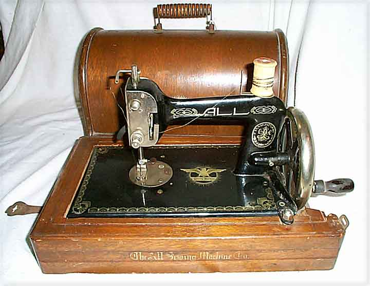
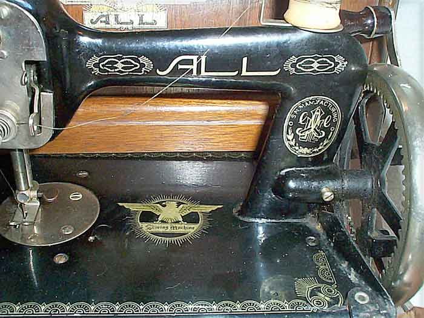
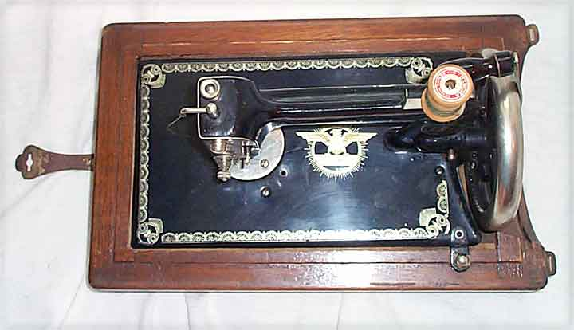
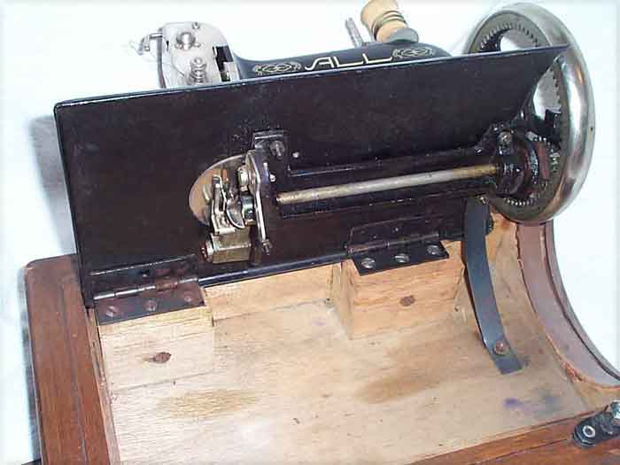

THE NEEDLEBAR
All Lead Mishin Seisakusho
Azabu, Minato-ku, Tokyo
All
Chainstitch Hand Machine, 1930's
Pictures courtesy of Linda Wray
Front View

Decals Detail

Top View

Under View

This page may not be reproduced
or distributed in part or in whole without the prior written permission of
the copyright owner